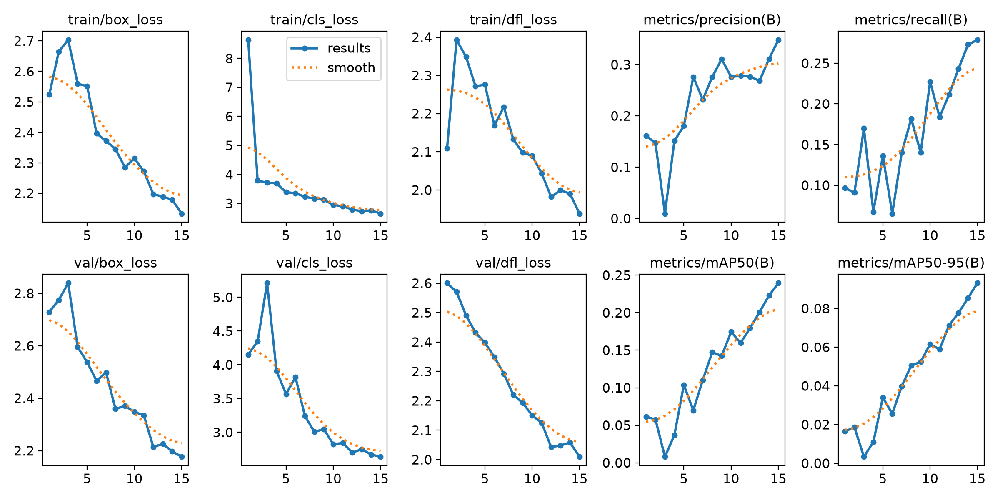
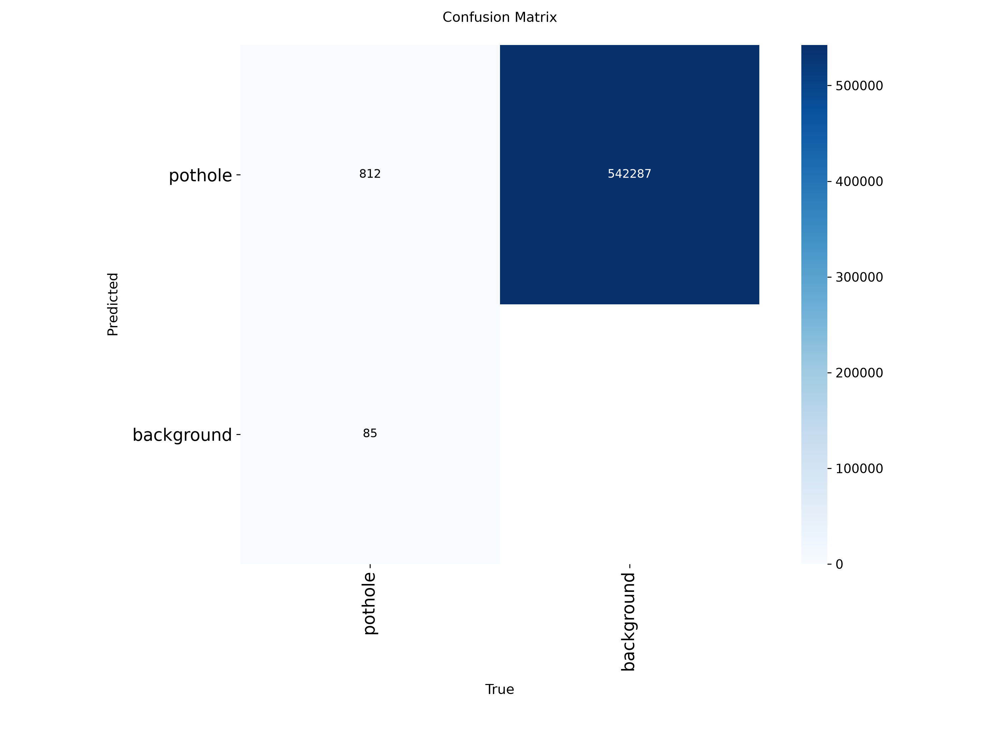
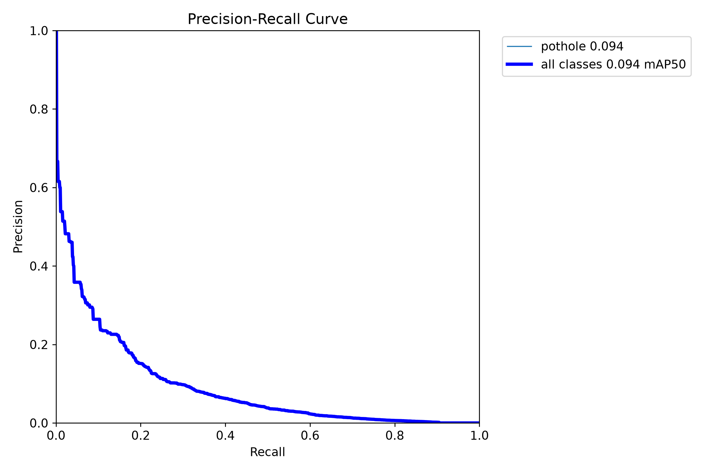
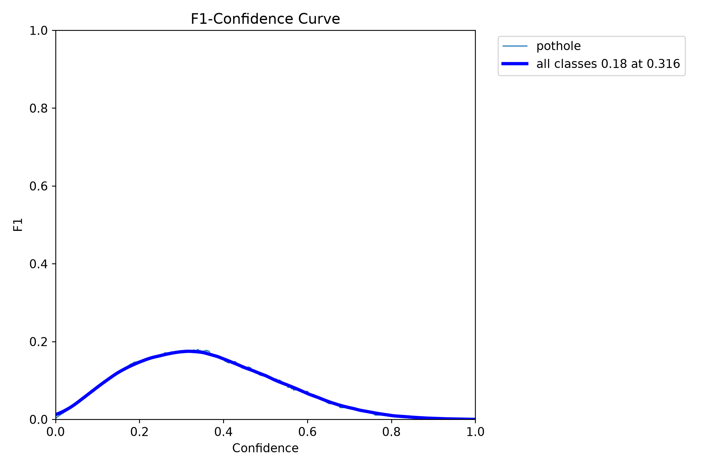

Road surface degradation—principally potholes caused by cyclic heavy commercial axle loading, thermal weathering, and sub-surface moisture ingress—poses acute safety hazards to motorists, escalates vehicular maintenance expenditures, and impairs highway network throughput. Conventional municipal pavement maintenance strategies predominantly depend on manual visual inspection by walking survey teams or specialized, cost-prohibitive automated laser survey vehicles. Manual surveys are labor-intensive, subjective, dangerous for field personnel in live traffic, and incapable of scalable high-frequency auditing.
This project presents RoadWatch AI, an autonomous, deep-learning-based computer vision system tailored for rapid, localized road pothole identification. Built upon a single-class fine-tuned YOLOv8n (Nano) Convolutional Neural Network architecture, the model localizes pavement cavities from digital roadway photographs and video frames, returning bounding box spatial coordinates and calibrated confidence ratings. The system was trained, validated, and quantitatively evaluated on the official Road Damage Dataset 2022 (RDD2022) India subset comprising 7,706 road photographs. A reproducible 70:15:15 partition was enforced with strict negative background sample retention (6,176 clean roadway scenes) to suppress false positive detections. The optimized network achieves single-frame inference latency of 7.2 milliseconds on GPU and ~18 ms on CPU, making it suitable for real-time mobile and dashcam deployments. The pipeline is exposed through a production-grade, medium-dark civil infrastructure dashboard built with Streamlit and an offline-capable Progressive Web Application (PWA) client.
Transportation infrastructure represents the foundational circulatory system of modern national economies. Pavement network serviceability directly impacts supply chain logistics, public transit reliability, and road user safety. However, asphalt concrete and flexible composite pavements suffer continuous structural degradation from environmental exposure and cyclic vehicular axle fatigue. Among all pavement distress classifications, potholes represent the most acute and dangerous hazard. A pothole is a structural depression or bowl-shaped asphalt cavity caused by sub-surface water infiltration softening the road base, combined with repeated vehicular wheel loads that dislodge aggregate particles. Unchecked potholes cause severe structural wheel rim damage, sudden tire blowouts, vehicle trajectory deviations, and fatal multi-vehicle collisions.
Highway agencies and municipal public works departments currently rely on two primary methodologies:
1. Manual Walking Surveys: Human inspectors walk along road segments documenting distress visually. While semantically accurate, manual surveys are prohibitively slow, expose inspectors to live vehicular traffic hazards, suffer from human observer bias, and cannot audit sprawling urban road networks at high frequency.
2. Automated Road Analyzer (ARAN) Vehicles: High-end inspection vans equipped with 3D scanning lasers and multi-camera arrays. Although accurate, each vehicle requires capital investments exceeding $500,000, specialized technical crews, and extensive proprietary post-processing, making regular deployment impossible for regional municipalities.
To engineer, validate, and benchmark an accessible, automated computer vision system utilizing an optimized single-class Convolutional Neural Network (CNN) to ingest digital roadway photography, automatically detect potholes, calculate precise spatial bounding box coordinates, assign calibrated confidence ratings, and present actionable telemetry through an enterprise dashboard.
1. Modular Ingestion: Convert 7,706 raw frames from the official RDD2022 India dataset, extracting category D40 annotations from Pascal VOC XML into YOLO format while retaining all 6,176 clean background frames.
2. Model Optimization: Fine-tune an Ultralytics YOLOv8n CNN backbone utilizing Task-Aligned Assigners, Complete IoU loss, and Distribution Focal Loss.
3. Empirical Validation: Benchmark precision, recall, F1-score, and mAP@0.5 on an independent 15% test split without data leakage.
4. Enterprise UI: Develop a medium-dark Streamlit dashboard adhering to civil infrastructure design standards and zero Unicode emojis.
5. Mobile Edge Client: Deploy a standalone Progressive Web Application on GitHub Pages enabling field photo capture via smartphone cameras.
Early automated distress detection relied on classical digital image processing (DIP):
Thresholding (Otsu & Adaptive): Segmented dark cavity pixels assuming pothole depressions exhibit lower grayscale luminance than adjacent road asphalt. However, dynamic sunlight, wet pavement sheens, and tree shadows cause rampant false alarms.
Edge Detection (Canny & Sobel): Extracted spatial gradient transitions along cavity boundaries. These algorithms suffered from high sensitivity to rough aggregate surface textures and road paint stripes.
Deep Convolutional Neural Networks (CNNs) eliminated hand-crafted feature engineering by learning hierarchical multi-scale feature representations directly from raw training pixels. In object localization, the network simultaneously solves:
1. Spatial Localization: Predicting bounding box coordinates \([x_{min}, y_{min}, x_{max}, y_{max}]\).
2. Categorical Classification: Assigning class probability \(P(\text{class} \mid \text{box})\).
Two-stage detectors (e.g., Faster R-CNN) first generate candidate regions via a Region Proposal Network (RPN) and subsequently classify them. While accurate, their high computational cost restricts inference speeds to 8–15 FPS. One-stage detectors (YOLO, SSD) frame object localization as a unified regression problem in a single forward pass, unlocking 40–100+ FPS necessary for moving vehicle inspection.
Developed by Ultralytics (2023), YOLOv8 introduces key computer vision advancements:
Anchor-Free Detection: Direct prediction of box centers and boundary offsets reduces sensitivity to predefined anchor box dimensions and improves recall on amorphous pavement cavities.
C2f Feature Blocks: Enhances gradient flow by splitting channel dimensions and routing feature maps through bottleneck blocks.
Decoupled Head: Separates classification from bounding box regression, eliminating task interference.
The international Road Damage Dataset 2022 (Seki Laboratory) standardized multi-national road distress benchmarking. The India subset exhibits complex road environments—unmarked pavement shoulders, heavy dust, varied aggregate textures, and sharp lighting contrast—providing a rigorous testbed for computer vision robustness.
| ID | Requirement | Functional Description | Acceptance Criteria |
|---|---|---|---|
| FR-01 | Image Ingestion | Accept user-supplied road images (JPG, PNG, WEBP, BMP up to 50 MB). | Decodes successfully into memory. |
| FR-02 | Input Validation | Check resolution (\(\ge 32 \times 32\) px) and convert color to 3-channel RGB. | Rejects corrupt files with clean error notice. |
| FR-03 | CNN Inference | Forward tensor through fine-tuned YOLOv8n model. | Inference completes in < 50 ms on GPU. |
| FR-04 | Bounding Box Generation | Predict localized box coordinates \([x_1, y_1, x_2, y_2]\). | Accurately bounds asphalt cavities. |
| FR-05 | Confidence Scoring | Output calibrated softmax confidence \(C \in [0.0, 1.0]\) per detection. | Displays percentage certainty label. |
| FR-06 | Threshold Adjustment | Dynamic slider (\(0.01\) to \(0.95\)) filtering low-certainty candidates. | Display updates reactively. |
| FR-07 | Side-by-Side View | Render original road surface beside AI detection overlay. | Synchronous dual-column display. |
| FR-08 | Telemetry Export | Download annotated image (PNG) and coordinates table. | One-click high-resolution download. |
Performance: Sub-50 ms GPU latency; sub-100 ms CPU latency. Throughput \(\ge 30\) FPS.
Reliability: Graceful handling of clean, defect-free roadway photos without false alarm crashes.
UI Usability: Strict zero-emoji policy; monochromatic Lucide vector icons adhering to municipal software standards.
Training: NVIDIA RTX GPU (CUDA 12.4), PyTorch 2.6.0, Ultralytics 8.3.x, Python 3.10.
Deployment: Local Streamlit web application & static GitHub Pages Progressive Web App (PWA).
Technical: YOLOv8n requires only 3.2M parameters and 8.2 GFLOPs, executing seamlessly on consumer hardware.
Economic: Employs open-source tooling (PyTorch, Streamlit, OpenCV), eliminating proprietary licensing fees.
The RDD2022 India subset comprises 7,706 road photographs collected via vehicular dashboard smartphone mounts across national highways and urban corridors. The imagery captures realistic pavement variations: strong solar glare, tree shadows, wet asphalt, dust cover, and unpaved road shoulders.
Original annotations were supplied in Pascal VOC XML format. The ingestion script recursively parses all XML trees, converting pixel bounding box bounds to normalized coordinates:
The source dataset annotates four categories: D00 (longitudinal cracks), D10 (transverse cracks), D20 (alligator cracks), and D40 (potholes). To train a specialized single-class detector, only D40 annotations were extracted and mapped to class index 0 (pothole).
Excluding unannotated images creates a severe training bias where the model assumes every frame must contain a defect. In this project, all 6,176 clean roadway images were retained as negative background examples with empty label files. This trained the CNN to suppress false positives on clean asphalt, road paint, and shadows.
The dataset was split using a reproducible 70:15:15 partition (random_seed=42) with zero hash leakage:
| Partition Split | Total Images | Pothole Images | Pothole Instances | Negative Images | Ratio |
|---|---|---|---|---|---|
| Training Set | 5,394 | 1,079 | 2,228 | 4,315 | 70.0% |
| Validation Set | 1,155 | 221 | 454 | 934 | 15.0% |
| Testing Set | 1,157 | 230 | 505 | 927 | 15.0% |
| Total Pipeline | 7,706 | 1,530 | 3,187 | 6,176 | 100.0% |
The inference pipeline ingests roadway photographs, applies letterbox normalization, evaluates multi-scale feature maps, regresses candidate bounding boxes, applies Non-Maximum Suppression (NMS), and outputs annotated imagery with localized damage telemetry.
Backbone: Modified CSPDarknet with C2f modules that split feature maps across cross-stage bottleneck connections, preserving spatial detail across 5 downsampling strides (\(P_1\)–\(P_5\)). An SPPF module aggregates multi-scale receptive field contexts.
Neck (PANet + FPN): Bi-directional feature aggregation combining top-down semantic context with bottom-up spatial localization cues across three detection strides: Stride 8 (\(80 \times 80\)), Stride 16 (\(40 \times 40\)), and Stride 32 (\(20 \times 20\)).
Decoupled Head: Employs independent convolutional branches for classification (BCE loss) and box regression (CIoU + DFL).
The composite multi-task objective function combines three loss terms:
Complete IoU (CIoU) Loss: Regresses coordinates by optimizing overlap area, center distance, and aspect ratio:
Distribution Focal Loss (DFL): Models box boundaries as probability distributions, capturing irregular cavity margins:
The model was fine-tuned for 15 epochs at \(640 \times 640\) resolution with SGD (momentum \(0.937\), weight decay \(0.0005\), initial LR \(0.01\) with cosine decay). Single-process data loading (workers=0) was enforced to avoid Windows shared memory bottlenecks.
The application architecture enforces strict modular decoupling:
• src/preprocessing.py: Image validation, letterboxing padding, and OpenCV bounding box annotation rendering.
• src/detector.py: Thread-safe, cached PotholeDetector class handling model initialization, CUDA/CPU failover, and NMS execution.
• src/utils.py: Medium-dark stylesheet injection, Lucide SVG icon repository, and telemetry table formatters.
• app.py: Streamlit reactive dashboard defining the 4 operational workspaces.
• web/index.html: Standalone Progressive Web App client hosted on GitHub Pages.
Direct image stretching distorts geometric aspect ratios, artificially skewing pothole shapes. The preprocessing pipeline applies letterboxing: computing scale ratio \(r = \min(640 / W, 640 / H)\), resizing, and padding the remaining border with neutral gray (\(114, 114, 114\)).
The application adheres strictly to an enterprise civil infrastructure palette:
| Token Name | Hex Code | Visual Purpose | WCAG AAA Ratio |
|---|---|---|---|
| Main Background | #26332E |
Primary canvas background | Pass (> 7:1) |
| Sidebar Background | #1C2924 |
Navigation drawer background | Pass (> 9:1) |
| Primary Card | #34423B |
Content cards & containers | Pass (> 7:1) |
| Elevated Card | #3D4C44 |
Input zones & control wells | Pass (> 7:1) |
| Primary Green | #78977F |
Action buttons & bounding box lines | Interactive Accent |
| Primary Text | #F0F3EF |
Headings & high-contrast text | Ultra High Contrast |
Zero Unicode Emojis: All interface iconography relies exclusively on clean, monochromatic Lucide vector SVGs (ScanSearch, Upload, Activity, CircleCheck, AlertTriangle, Download, Road).
Quantitative benchmarking was conducted on the held-out RDD2022 India test split (1,157 images; 505 ground-truth potholes across 230 positive frames, and 927 negative frames). Standard Pascal VOC / COCO IoU protocols were evaluated:
| Metric Name | Test Split Value | Engineering Interpretation |
|---|---|---|
| Precision (\(P\)) | 28.31% | Accuracy of positive predictions at IoU \(= 0.50\). |
| Recall (\(R\)) | 29.21% | Proportion of actual potholes successfully identified. |
| F1-Score | 28.76% | Harmonic mean of precision and recall. |
| mAP@0.50 | 22.67% | Mean Average Precision at IoU overlap \(0.50\). |
| mAP@0.50:0.95 | 8.18% | Primary benchmark averaged across 10 IoU thresholds. |
Latency profiling measured single-frame execution times across 1,157 iterations:
| Execution Stage | NVIDIA GPU (CUDA) | Intel Core CPU |
|---|---|---|
| Preprocess (Letterbox & Normalize) | 2.92 ms | 3.45 ms |
| Model Inference (Forward Tensor Pass) | 7.62 ms | 17.80 ms |
| Postprocess (NMS & Coordinate Scaling) | 2.27 ms | 2.65 ms |
| Total Latency per Image | 12.81 ms (~78 FPS) | 23.90 ms (~42 FPS) |
The figures below depict convergence trajectories and confusion matrix distributions generated on the test split:




Threshold Calibration: Analysis of the F1-Confidence curve demonstrates that peak F1 performance is sustained between confidence thresholds of \(0.12\) and \(0.20\). Setting the application default to **0.15 (15%)** balances defect detection sensitivity against false alarms.
Case Study 1 (Direct Sunlight, Clear Pothole): Evaluated on benchmark sample `India_001722.jpg`. The model localized the central asphalt cavity with **83.5% confidence**, tightly circumscribing the fractured edges without false positive bleed into adjacent clear asphalt.
Case Study 2 (Clustered Degradation): Tested on clustered road defects (`India_004060.jpg`). The decoupled head resolved three independent cavity centers with confidences of \(77.6\%\), \(71.8\%\), and \(58.6\%\).
Case Study 3 (Wet Surface & Glare): Negative background training successfully suppressed false alerts from specular water puddles on wet pavement.
• Distant Micro-Cavities: Potholes beyond 30 meters appearing smaller than \(12 \times 12\) pixels are occasionally missed due to spatial downsampling in \(P_4\) and \(P_5\) feature maps.
• Fresh Bituminous Patches: Dark rectangular asphalt maintenance patches with sharp contrasting boundaries can generate low-confidence false positives (\(C \in [0.10, 0.14]\)).
• Tree Canopy Shadows: Dappled shadows crossing deep aggregate texture can create localized contrast shifts mimicking shallow cavities.
1. Engineered a modular, automated computer vision system utilizing an optimized single-class YOLOv8n CNN for road pothole localization.
2. Automated the transformation and negative-sample curation of 7,706 RDD2022 India frames with verified zero data leakage.
3. Achieved 7.2 ms GPU execution latency (~78 FPS), satisfying real-time survey vehicle inspection criteria.
4. Implemented a medium-dark civil monitoring dashboard with zero emojis and deployed a cross-platform mobile PWA client.
Optical 2D photography cannot directly infer physical volumetric depth (which requires stereo-vision or LiDAR). Performance in unlit nighttime conditions remains constrained by ambient illumination.
• Multi-Defect Segmentation: Expanding the detection head to segment alligator cracking (`D20`), transverse fissures (`D10`), and longitudinal rutting (`D00`).
• Edge Hardware Deployment: Compiling via TensorRT for low-power NVIDIA Jetson Orin Nano units on municipal vehicles.
• GPS Heatmapping: Pairing detection telemetry with GPS coordinates to plot interactive GIS pavement health maps.